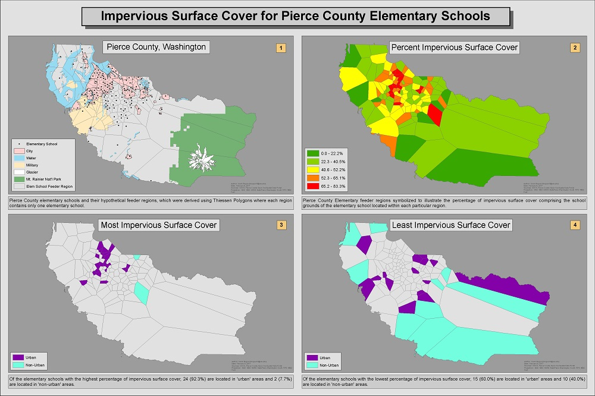

Impervious Surface Cover for Pierce County Elementary Schools
Determining Elementary School Feeder Regions
 The purpose of this exercise was to analyze impervious surface cover for Pierce County elementary schools. Starting with data for school locations and impervious surface data (obtained from Pierce County Open GeoSpatial Data Portal and USGS respectively). Thiessen Polygons were then calculated to generate the hypothetical feeder regions within which there is only one elementary school per region. Additionally, it was possible to calculate the percentage of impervious surface comprising each elementary school in Pierce County.
The purpose of this exercise was to analyze impervious surface cover for Pierce County elementary schools. Starting with data for school locations and impervious surface data (obtained from Pierce County Open GeoSpatial Data Portal and USGS respectively). Thiessen Polygons were then calculated to generate the hypothetical feeder regions within which there is only one elementary school per region. Additionally, it was possible to calculate the percentage of impervious surface comprising each elementary school in Pierce County.
Percent Impervious Surface Cover
 Pierce County elementary school feeder regions symbolized to show the percentage of impervious surface cover of the elementary school located within each particular region where green is a low percentage and red is a high percentage
Pierce County elementary school feeder regions symbolized to show the percentage of impervious surface cover of the elementary school located within each particular region where green is a low percentage and red is a high percentage
Acreage of School Grounds
 Pierce County elementary school feeder regions symbolized according to the size in acres of the school grounds located within each region where red is smaller acreage and green is larger acreage
Pierce County elementary school feeder regions symbolized according to the size in acres of the school grounds located within each region where red is smaller acreage and green is larger acreage
Impervious Surface Cover by Designation
 Pierce County elementary school feeder regions symbolized according to designation ('urban' or 'non-urban') and percentage of impervious surface cover ('high' or 'low' percentage) for each region's respective school.
Pierce County elementary school feeder regions symbolized according to designation ('urban' or 'non-urban') and percentage of impervious surface cover ('high' or 'low' percentage) for each region's respective school.
Final Analysis

{kind=link}